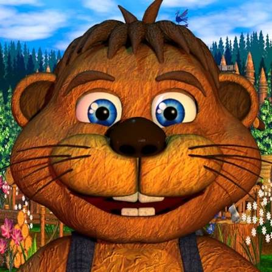
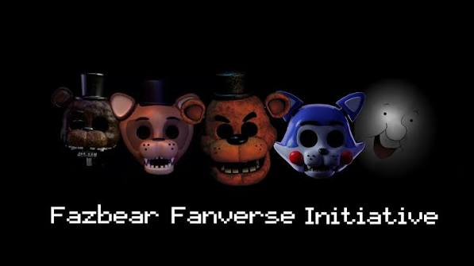

Scott Braden Cawthon es un desarrollador de videojuegos, escritor y productor estadounidense nacido en Belton, Texas, el 4 de junio de 1978. Es el creador de la franquicia Five Nights at Freddy's, cuyo primer juego fue publicado en 2014. Los primeros juegos de Scott fueron publicados a principios de los 2000. Uno de sus primeros RPG fue Max, lanzado en 2002. Luego desarrolló Chipper and Sons Lumber Co., que recibió críticas por tener personajes que se movían e interactuaban como máquinas animatrónicas, lo que influyó en el desarrollo de Five Nights at Freddy's. El 13 de junio de 2014 Scott anunció su próximo título, Five Nights at Freddy's, y el 8 de agosto de 2014 fue publicado en Steam.
El 10 de noviembre de ese mismo año, Cawthon lanzó la primera secuela titulada Five Nights at Freddy's 2. Poco después publicó un teaser de la tercera entrega, que llegó el 2 de marzo de 2015. El 23 de julio de 2015 Scott lanzó Five Nights at Freddy's 4. El 15 de septiembre de ese año anunció el desarrollo de un videojuego de rol (RPG) titulado FNaF World. Luego presentó Five Nights at Freddy's: Sister Location, publicado el 7 de octubre de 2016. El 4 de diciembre de 2017 lanzó Freddy Fazbear's Pizzeria Simulator y el 28 de junio de 2018 anunció Ultimate Custom Night, que fue lanzado gratuitamente en Steam. Este fue el último título desarrollado completamente por él. A partir de 2019 comenzó a trabajar junto a Steel Wool Studios en las futuras entregas de la saga, manteniendo un papel importante en el desarrollo de la historia y los diseños de los animatrónicos.

Scott Cawthon creó Five Nights at Freddy's como un intento de recuperar su carrera como desarrollador de videojuegos y conseguir el éxito que no había logrado con sus proyectos anteriores. La idea surgió después de recibir numerosas críticas por su juego Chipper & Sons Lumber Co., ya que muchos jugadores consideraban que sus personajes tenían movimientos rígidos y expresiones extrañas, parecidos a los de animatrónicos. Aunque al principio estas críticas lo desanimaron, Scott decidió aprovecharlas y convertir aquello que parecía un defecto en la base de un juego de terror. Así nació Five Nights at Freddy's. Scott Cawthon nació el 4 de junio de 1978 en el condado de Bell, Texas, Estados Unidos. Antes de crear FNAF, desarrolló varios videojuegos, algunos de temática cristiana

Uno de los proyectos más importantes de scott es la iniciativa fazbear fanverse,una colaboración entre el y varios creadores de fangames de fnaf ( o five nights at freddy's) con el fin de apoyar a los creadores permitiéndoles beneficiarse del desarrollo de las entregas. Esta iniciativa fue anunciada el 21 de agosto de 2020 en el foro de scott con cinco proyectos; five nights at candy's o fnac,the Joy of creation,popgoes,one night at flumpty's y five night at freddy's plus aunque este último fue eliminado tras su creador (phisnom)entrará en una controversia en twitter